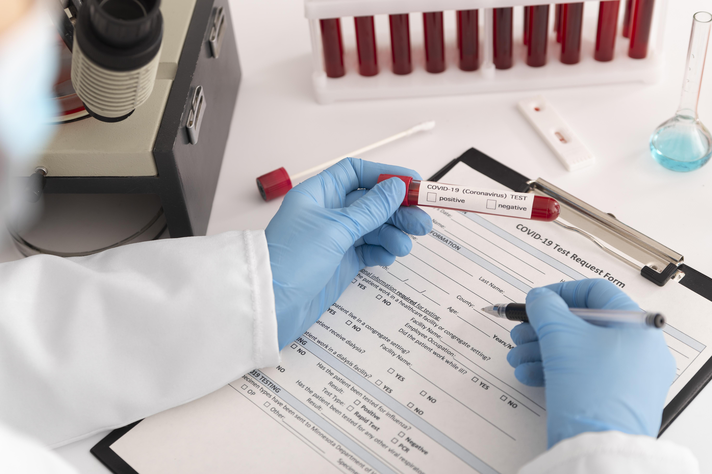
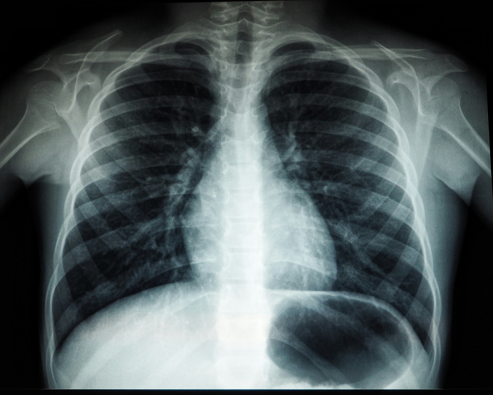

Consultas Médicas
Realizamos consultas médicas de alta calidad para atender sus necesidades de salud.
Profesionales Empáticos
Nuestro equipo médico no solo está altamente capacitado, sino que también se destaca por su empatía y atención personalizada. Nos preocupamos por cada paciente individualmente, brindando un enfoque humano en cada consulta.
Consulta Integral
En Healthouse, abordamos tu salud de manera integral. No solo tratamos los síntomas, sino que también trabajamos para comprender las causas subyacentes y ayudarte a lograr un bienestar a largo plazo.
Horarios Flexibles
Sabemos que tu tiempo es valioso, por lo tanto, en Healthouse ofrecemos horarios flexibles para adaptarnos a tu agenda, facilitando el acceso a la atención médica cuando más lo necesitas. Programa tu consulta hoy y descubre la diferencia.
Laboratorio
Nuestro laboratorio cuenta con tecnología de última generación para análisis precisos.
Tecnología de Vanguardia
En Healthouse, invertimos en tecnología de última generación para llevar a cabo análisis de sangre con precisión y eficiencia. Ofreciendo resultados rápidos y confiables, proporcionando información crucial para el diagnóstico y tratamiento de diversas condiciones médicas.
Amplio Rango de Pruebas
Desde análisis de rutina hasta pruebas especializadas, nuestro Laboratorio de Sangre cubre un amplio espectro de servicios. Realizamos pruebas hematológicas, químicas, inmunológicas y genéticas para brindarte una visión completa de tu salud.
Confidencialidad y Privacidad
Respetamos tu privacidad y garantizamos la confidencialidad de tus resultados. Puedes confiar en que tus datos personales y médicos están seguros con nosotros.
Imágenes Médicas
Utilizamos tecnología avanzada para obtener imágenes médicas detalladas y precisas.
Precisión Diagnóstica
En Healthouse, adoptamos la última tecnología en imágenes médicas. Cada estudio se realiza con equipos de vanguardia para obtener una excelente calidad de los diagnósticos gracias a la tecnología de imágenes avanzada y la experiencia de tus radiólogos.
Amplia Gama de Estudios
Realizamos todo tipo de imagenes como Rayos X, Tomografías computarizadas, Estudios de medicina nuclear, Imágenes por resonancia magnética, Ecografías.Ya sea un chequeo preventivo o la evaluación de una condición específica, nuestro servicio se adapta a cada paciente de manera individual.
Rapidez en los Resultados
En Healthouse, priorizamos tu tiempo. Nos comprometemos a proporcionar resultados precisos de manera oportuna, para que puedas recibir la atención necesaria lo antes posible.